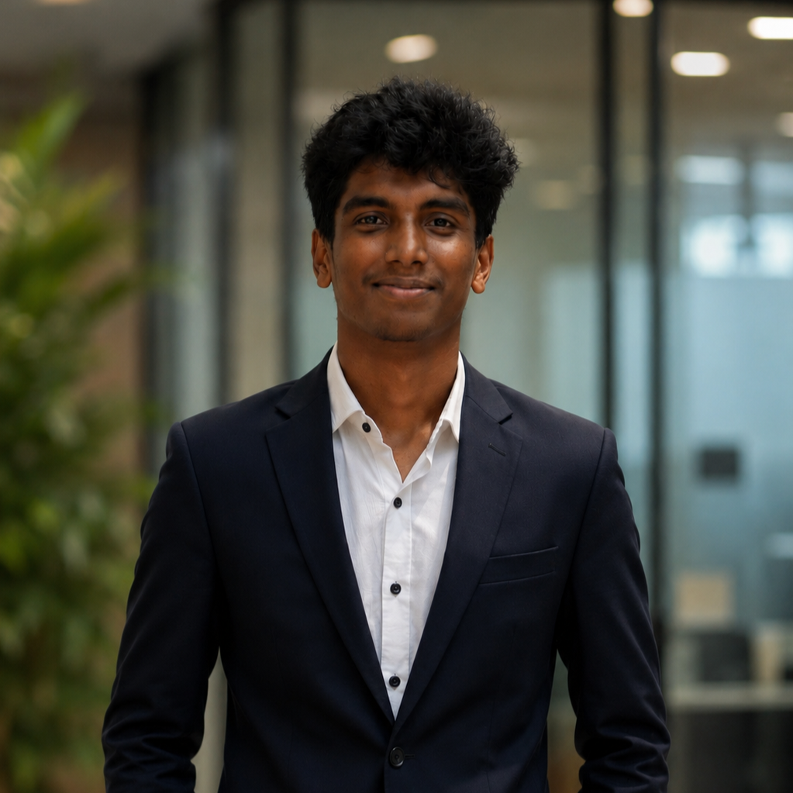

|
Building intelligent robotic systems from the ground up. Bridging the gap between hardware and software — from PID controllers on embedded boards to autonomous navigation pipelines.

I'm a Robotics and Automation Engineering student at Rajalakshmi Engineering College, Chennai — currently in my 3rd year with a strong CGPA of 8.2. I'm also pursuing an Online B.S. in Data Science from IIT Madras, giving me dual expertise in physical robotics and data-driven intelligence.
My work sits at the intersection of embedded systems, real-time control, and AI. I've built everything from self-balancing robots using PID algorithms to autonomous mobile robots with obstacle avoidance. I love turning theoretical concepts into physical, working machines.
Outside of robotics, I dive deep into machine learning and data analysis — always looking for ways to make systems smarter, more adaptive, and autonomous.
Designed robot chassis structures and programmed navigation controllers/algorithms for autonomous picking robots under strict competition guidelines.
Developed an IoT-enabled smart agricultural rover featuring AI-powered edge leaf disease detection using ESP32 nodes and custom image processing.
Earned Elite + Gold Medal in NPTEL Python for Data Science and Machine Learning Foundations courses, maintaining an 8.2+ CGPA in Robotics Engineering.
Created open-source ROS2 packages for 2D LiDAR navigation; active solver on Kaggle (Top 15% notebooks) and LeetCode platforms.
I'm currently open to internship opportunities, research collaborations, and freelance robotics/embedded projects.
Whether you're building something ambitious in robotics, autonomous systems, or AI — I'd love to hear from you.
Let's build something remarkable.